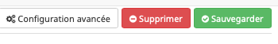

Suppression¶
Pour la suppression d’un équipement il faut comprendre qu’il y a deux niveaux: - ZigBee - Abeille/Jeedom
Lors de l’inclusion l’équipement a été inclu dans le réseau zigbee par la zigate puis une répresentation a été ajouté dans Abeille/Jeedom. Les deux sont indépendants.
Suppression du réseau ZigBee¶
Si vous ne voulez plus utiliser un équipement vous pouvez le sortir du réseau ZigBee en utilisant une commande spécifique de la ruche.
Ouvrez la ruche
rendez la visible
allez sur le dashboard pour voir la ruche
trouvez la commande Remove

Renseignez l’adresse IEEE est faite « Remove ».
L’équipement doit répondre en indiquant qu’il a quitté le réseau zigbee. En consequence, l’equipement sera desactivé dans Abeille.
Note
Pour obtenir l’adresse IEEE d’un équipement, ouvrez la page commande de celui ci et faites « tester » sur la commande IEEE.
Note
Pour les équipements sur pile, il est necessaire de le réveiller avant de lui envoyer le « remove ».
Suppression d’Abeille/Jeedom¶
Suite à la suppression du réseau zigbee, l’équipement doit apparaitre desactivé. Vous pouvez le supprimer avec le bouton rouge « Supprimer » dans Jeedom.
Note
Vous pouvez garder l’équipement dans Abeille/Jeedom si vous le souhaitez. Si vous le re-incluez dans le reseau zigbee, il sera de nouveau pilotable sans n’avoir rien perdu.